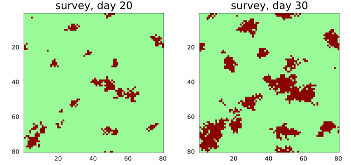
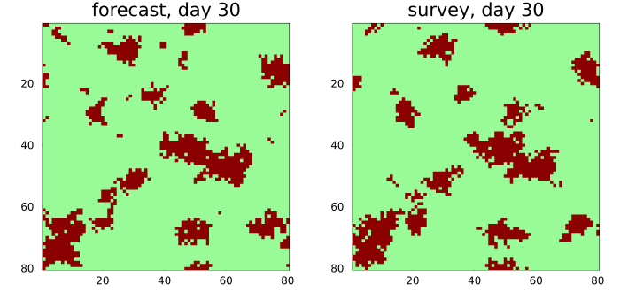
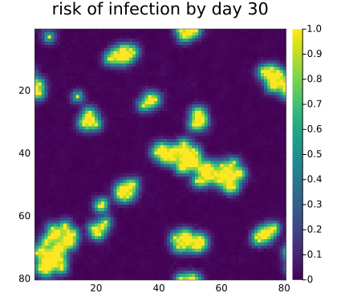
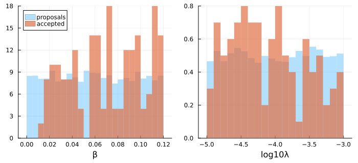
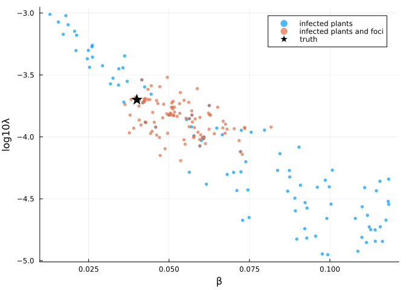
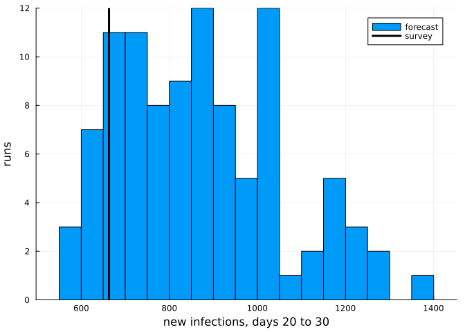

Evaluation and calibration
Simon Frost
- Overview
- A disease with two ways to spread
- Comparing two maps
- Risk maps
- Calibration
- Forecasting with the posterior
Overview
A model of a plant epidemic is only useful once it has been confronted with data: maps of where the disease was found, from surveys in the field. This vignette does the two things such maps are used for. It evaluates a model, by measuring how well its forecasts agree with a later survey, and it calibrates a model, by finding the parameters under which simulations resemble a survey, with approximate Bayesian computation.
The surveys here are simulated from a model with known parameters, so that the answers can be checked.
ENV["GKSwstype"] = "100"
using CellularAutomataCore
using Plots
using Random
using StatisticsA disease with two ways to spread
A soil-borne disease spreads from infected plants to their eight neighbours with probability β per infected neighbour per day, and every healthy plant can also be infected from outside the field, by wind-blown spores or a contaminated tool, with a small daily probability λ. Infected plants stay infected. A rate as small and uncertain as λ is best handled on a log scale, so the parameter is log10λ.
spread = LocalRule(Moore(1)) do cell, nbrs, ctx
cell == 1 && return Int8(1)
k = count(==(1), nbrs)
escape = (1 - ctx.p.β)^k * (1 - exp10(ctx.p.log10λ))
return bernoulli(ctx, 1 - escape, 1) ? Int8(1) : Int8(0)
end
n = 80
u0 = zeros(Int8, n, n)
u0[40, 40] = 1
truth = (β=0.04, log10λ=-3.7)
prob = CAProblem(spread, u0, 30, truth; seed=1)CAProblem(LocalRule(<anonymous function>, Moore(1)) on Torus((80, 80)), tspan=(0, 30))The field is surveyed on days 20 and 30. The “true” epidemic is one run of the model, with a seed that no simulation below uses.
field = solve(remake(prob; seed=999); saveat=[20, 30])
day20, day30 = field.u[2], field.u[3]
plot(plot(prob.space, day20; c=[:palegreen, :darkred], colorbar=false,
title="survey, day 20"),
plot(prob.space, day30; c=[:palegreen, :darkred], colorbar=false,
title="survey, day 30"); layout=(1, 2), size=(700, 330))
There is a large focus around the first infected plant and a scatter of smaller ones, started by infections from outside.
Comparing two maps
Suppose the parameters are known and the model forecasts day 30 from the survey of day 20. A forecast is a problem that starts from the survey:
forecast = CAProblem(spread, day20, (20, 30), truth; seed=1)
predicted = final_state(solve(forecast; save_everystep=false))
plot(plot(prob.space, predicted; c=[:palegreen, :darkred], colorbar=false,
title="forecast, day 30"),
plot(prob.space, day30; c=[:palegreen, :darkred], colorbar=false,
title="survey, day 30"); layout=(1, 2), size=(700, 330))
confusion_counts cross-tabulates two Bool maps; cohens_kappa measures the agreement of two categorical maps beyond what their category frequencies would give by chance (Cohen 1960).
(counts=confusion_counts(predicted .== 1, day30 .== 1),
kappa=cohens_kappa(predicted, day30))(counts = (tp = 694, fp = 320, fn = 314, tn = 5072), kappa = 0.6276261460480795)Kappa flatters a forecast, because every plant infected on day 20 is still infected on day 30 and is predicted correctly by any model. The figure of merit (Pontius et al. 2008) looks only at change: of the plants that became infected in the forecast or in the survey, the fraction that did so in both.
figure_of_merit(day20, predicted, day30)0.3550356052899288About a third. Spread to a neighbour and infection from outside are both random, so a single run cannot be expected to match the survey plant by plant.
Risk maps
A better forecast is a probability: the fraction of an ensemble of runs in which each plant is infected on day 30. The area under the ROC curve (auc) then measures how well that risk ranks the plants that were infected above those that were not, among the plants still healthy on day 20.
function risk(p; trajectories=200)
ens = EnsembleProblem(remake(forecast; p);
output_func=(sol, ctx) -> (final_state(sol) .== 1, false))
runs = solve(ens, Synchronous(), EnsembleThreads(); trajectories,
save_everystep=false)
return mean(runs.u)
end
healthy = day20 .== 0
infected30 = day30 .== 1
r = risk(truth)
heatmap(r; c=:viridis, aspect_ratio=:equal, yflip=true, framestyle=:box,
xlims=(0.5, n + 0.5), ylims=(0.5, n + 0.5), title="risk of infection by day 30",
size=(420, 380))
Three models can be compared this way: the true one, one with local spread only, and one where every infection comes from outside the field. Besides the ranking (AUC), the expected number of new infections is the sum of the risks over healthy plants.
models = ["true model" => truth, "local spread only" => (β=0.05, log10λ=-Inf),
"outside infection only" => (β=0.0, log10λ=-3.0)]
[name => (auc=round(auc(r[healthy], infected30[healthy]); digits=3),
new=round(Int, sum(r[healthy])))
for (name, r) in ((name, risk(p)) for (name, p) in models)]3-element Vector{Pair{String, @NamedTuple{auc::Float64, new::Int64}}}:
"true model" => (auc = 0.942, new = 645)
"local spread only" => (auc = 0.944, new = 780)
"outside infection only" => (auc = 0.498, new = 61)The survey found 663 new infections. Local spread alone ranks the plants as well as the true model does, since most new infections are next to old ones, but a model of infection from outside only has no idea where the disease will be. AUC measures where, not how much: a model can rank plants well and still get the size of the epidemic wrong, so the two are worth checking together.
Calibration
Now suppose the parameters are unknown, and only the survey of day 20 is available. Rejection ABC (Beaumont et al. 2002) draws parameter sets from a prior, simulates the model once with each, and keeps those whose simulations are closest to the survey. The prior is uniform for β, and for log10λ, as λ is known only to within two orders of magnitude.
prior = rng -> (β=0.12 * rand(rng), log10λ=-5 + 2 * rand(rng))
calibrate = remake(prob; tspan=(0, 20))CAProblem(LocalRule(<anonymous function>, Moore(1)) on Torus((80, 80)), tspan=(0, 20))The distance between a simulation and the survey can compare summaries of the two maps. The obvious summary is the number of infected plants:
infected(u) = count(==(1), u)
foci(u) = length(cluster_sizes(u .== 1; space=prob.space, neighbourhood=Moore(1)))
observed = (infected=infected(day20), foci=foci(day20))(infected = 345, foci = 18)d_infected(sol, obs) = abs(infected(final_state(sol)) - obs.infected) / obs.infected
by_count = abc_rejection(calibrate, prior, d_infected, observed; n=5000, rng=Xoshiro(1),
keep=100, save_everystep=false)ABCResult: 100 of 5000 proposals accepted, distances 0.0 to 0.0435Each of the 5000 proposals is one trajectory of an EnsembleProblem, so the simulations run on all threads, and the 100 closest are kept. plot shows the accepted values of each parameter against the prior:
plot(by_count; size=(700, 320), bins=30, bottom_margin=4Plots.mm)
The number of infected plants does not pin either parameter down, because the two can trade off: a fast local spread from one focus, or a slower spread from many foci, can infect the same number of plants. The accepted samples lie along a ridge. The number of separate foci tells the two apart, so a second distance uses both summaries, each relative to its observed value:
function d_both(sol, obs)
u = final_state(sol)
return hypot((infected(u) - obs.infected) / obs.infected, (foci(u) - obs.foci) / obs.foci)
end
by_both = abc_rejection(calibrate, prior, d_both, observed; n=5000, rng=Xoshiro(1),
keep=100, save_everystep=false)ABCResult: 100 of 5000 proposals accepted, distances 0.0556 to 0.315scatterpoints(res) = ([s.β for s in res.samples], [s.log10λ for s in res.samples])
scatter(scatterpoints(by_count)...; label="infected plants", ms=3, msw=0, alpha=0.7,
xlabel="β", ylabel="log10λ")
scatter!(scatterpoints(by_both)...; label="infected plants and foci", ms=3, msw=0,
alpha=0.7)
scatter!([truth.β], [truth.log10λ]; label="truth", m=:star5, ms=10, c=:black)
summary(res, f) = round.(quantile([f(s) for s in res.samples], [0.05, 0.5, 0.95]);
sigdigits=3)
(β=summary(by_both, s -> s.β), log10λ=summary(by_both, s -> s.log10λ))(β = [0.0395, 0.0516, 0.0718], log10λ = [-4.07, -3.84, -3.62])The two summaries recover both parameters: the true values, 0.04 and -3.7, lie inside the 90% intervals.
What about comparing the maps cell by cell, with Cohen’s kappa? The distance needs the survey map itself, rather than its summaries:
d_kappa(sol, obs) = 1 - cohens_kappa(final_state(sol), obs)
by_kappa = abc_rejection(calibrate, prior, d_kappa, day20; n=5000, rng=Xoshiro(1),
keep=100, save_everystep=false)
(β=summary(by_kappa, s -> s.β), log10λ=summary(by_kappa, s -> s.log10λ))(β = [0.0486, 0.0827, 0.117], log10λ = [-4.96, -4.47, -3.6])The interval for β misses the truth, and the one for log10λ is almost the whole prior. The foci started from outside land in different places in every run, so cell-by-cell agreement can only come from the one focus every run shares, the first infected plant. The distance therefore rewards a fast local spread that makes that focus as large as the survey’s total. A single stochastic run should be compared with a survey through summaries that do not depend on where chance put each focus.
Forecasting with the posterior
The accepted parameter sets are a sample from the approximate posterior. A forecast that accounts for the uncertainty in the parameters runs one simulation from the survey of day 20 with each of them:
posterior = by_both.samples
ens = EnsembleProblem(forecast;
prob_func=(pr, ctx) -> remake(seed_trajectory(pr, ctx);
p=posterior[ctx.sim_id]),
output_func=(sol, ctx) -> (final_state(sol), false))
runs = solve(ens, Synchronous(), EnsembleThreads(); trajectories=length(posterior),
save_everystep=false)
posterior_risk = mean(u .== 1 for u in runs.u)
new_infections = [count((u .== 1) .& healthy) for u in runs.u]
(auc=round(auc(posterior_risk[healthy], infected30[healthy]); digits=3),
new_infections=round.(Int, quantile(new_infections, [0.05, 0.5, 0.95])),
observed=count(infected30 .& healthy))(auc = 0.945, new_infections = [621, 856, 1205], observed = 663)histogram(new_infections; bins=20, label="forecast",
xlabel="new infections, days 20 to 30", ylabel="runs")
vline!([count(infected30 .& healthy)]; lw=3, c=:black, label="survey")
Fitted to the first survey only, the model ranks the plants at risk as well as the true parameters did (an AUC of 0.945 against 0.942), and the survey’s count of new infections lies inside the 90% interval of the forecast, though in its lower part. The posterior still allows faster local spread than the truth (its median β is about 0.05), and a faster spread compounds over ten days. A second survey, added to the distance, would narrow it.
Beaumont, Mark A., Wenyang Zhang, and David J. Balding. 2002. “Approximate Bayesian Computation in Population Genetics.” Genetics 162 (4): 2025–35. https://doi.org/10.1093/genetics/162.4.2025.
Cohen, Jacob. 1960. “A Coefficient of Agreement for Nominal Scales.” Educational and Psychological Measurement 20 (1): 37–46. https://doi.org/10.1177/001316446002000104.
Pontius, Robert Gilmore, Wideke Boersma, Jean-Christophe Castella, et al. 2008. “Comparing the Input, Output, and Validation Maps for Several Models of Land Change.” The Annals of Regional Science 42 (1): 11–37. https://doi.org/10.1007/s00168-007-0138-2.